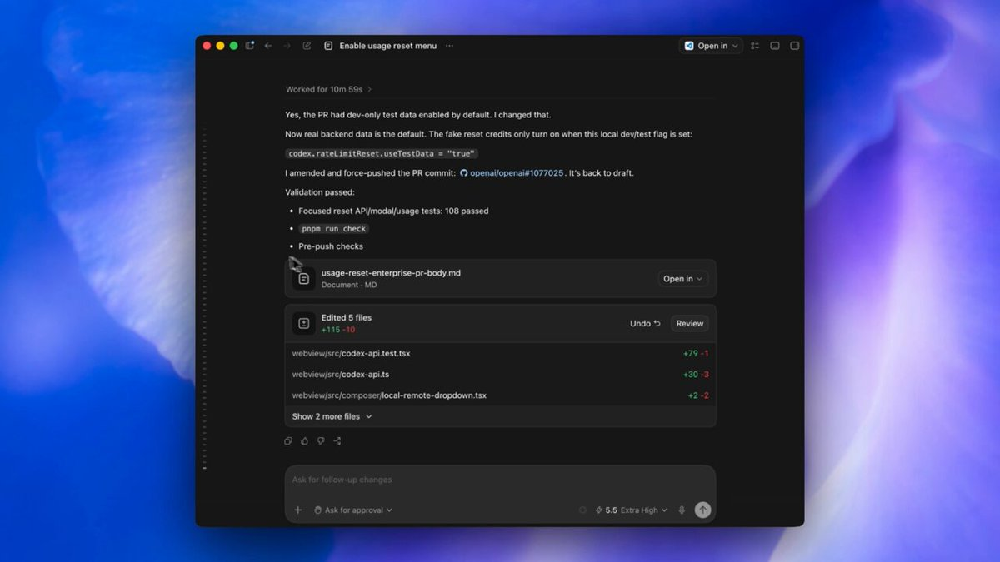
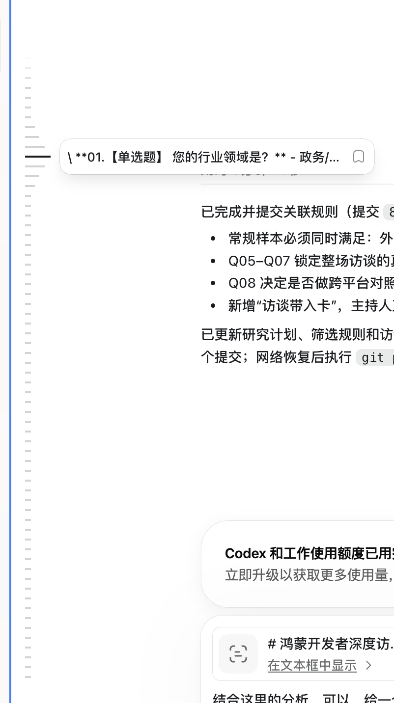
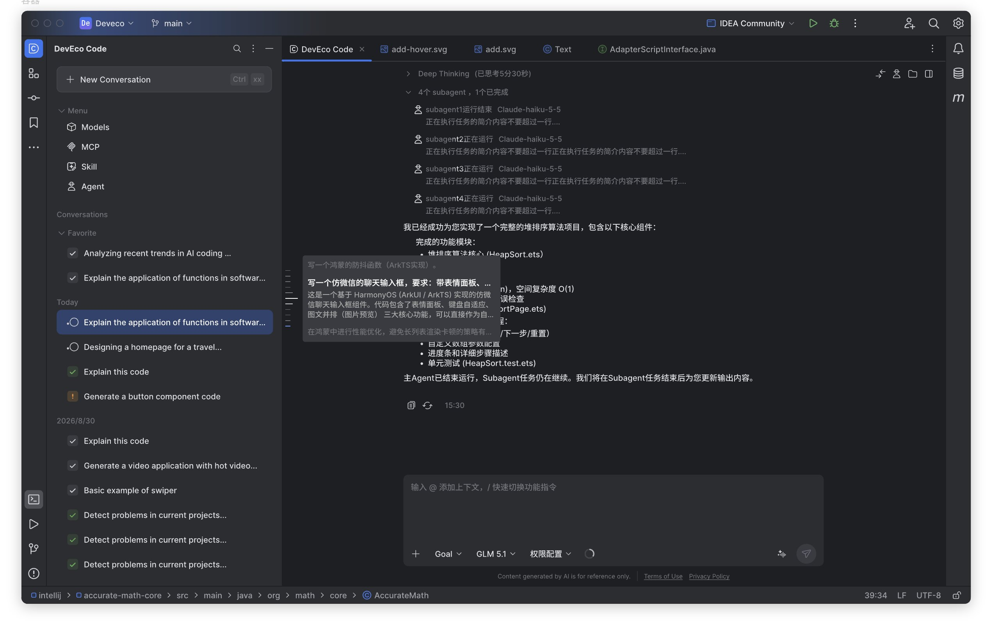
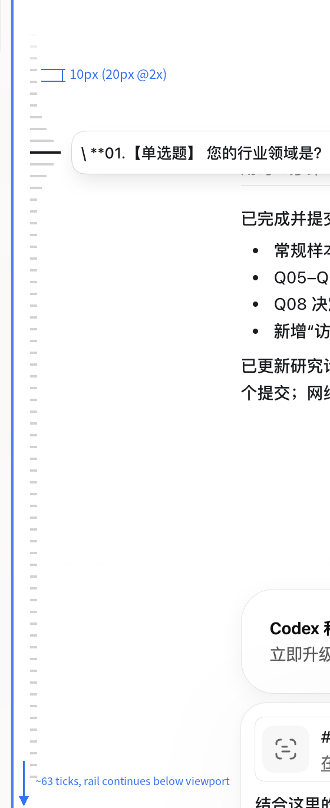

消息锚点导航：对话左侧那排「钢琴键」，各家怎么做
对话区左侧那排短横线，口头叫「钢琴键」，专业名称是消息锚点导航（message anchor navigation），各家文档里也叫 conversation navigator、conversation timeline、message locator。它是一份以用户消息为锚点的目录：每根刻度对应一条提问，当前位置高亮，悬停浮出这条提问，点击跳过去。本页对照 Codex、Antigravity、OpenBitfun、WorkBuddy、CodeBuddy 和 Claude Code，更正上一版「把刻度当成轮次计数」的误读，再落到 DevEco Code。
01结论
- 锚点是用户的提问，不是「轮」，也不是内容长度。Codex 的悬停卡显示的就是那条提问的原文开头；Antigravity 官方说明是「每个 turn 一个点，悬停看这一轮的 prompt、回复预览和发送时间」。AI 回复、工具调用都挂在提问下面，不单独占刻度。
- Antigravity 在长对话上走得最远。2.28.1（2026-10-28）上线 conversation navigator；2.29.0 给长对话的「章节」加了 AI 生成的短标题；2.30.0 修了「对话末尾高亮错位」和「对话宽度设为 Fill 时消失」。长对话按日期分章节、章节可折叠——这正是上一版纠结的「刻度放不下怎么办」的官方答案。
- Codex 有官方的导航轨，但各端不一致。2026-06-27 OpenAI 官方宣布长线程新增 navigation rail：悬停预览附近轮次、点击跳转。我们的截图里还有带书签的悬停卡；但 GitHub 上同时有人说新版统一桌面端里「时间线不见了」（#35071）、标记在某些侧栏宽度下消失（#32015）、VS Code 插件里没有（#31104）。截图只代表截图那个版本。
- WorkBuddy 也是刻度导航，而且官方文档写得最完整。对话右侧一条竖向刻度，每条刻度对应一条提问，当前提问刻度更长更深；鼠标移上去会把整条刻度展开成提问列表（只列提问、过长截断），点列表项或刻度都能定位，滚动时同步。它把「刻度省空间」和「列表能扫读」合在了一个控件里。CodeBuddy JetBrains 插件写的是「历史提问分段懒加载与跳转定位」，形态待确认。
- Claude Code 的 /rewind 不是同类。它解决「退回到某一步」（代码、对话或两者），不是「浏览并跳到某条提问」。放在表里只作对照。
- DevEco Code 计划采用「刻度 + 三段卡片」，长对话用 Codex 式「窗口跟随」。卡片显示上一条 / 当前条加回复摘要 / 下一条，信息量介于 Codex（一行）和 WorkBuddy（整列表）之间，默认态和悬停态一体。长对话时刻度间距固定 10px 不压缩，轨道超出可视区就只显示视口附近一段，随对话滚动，上下端淡出补足总长感。热区和悬停时间的数值与依据见 08 节。
02它是什么
按 Codex 截图重画的示意（不是像素复刻）。它和三个相近概念容易混：Minimap 展示内容本身的形状，滚动条按内容长度映射位置，scroll-spy 只是「滚动时高亮当前目录项」这一个行为。消息锚点导航是「目录 + scroll-spy + 悬停预览 + 点击跳转」的组合。
- 1刻度轨
- 贴对话区左缘，每条提问一根短横线，等距排列。常态很淡，只表达「有多少条、分布在哪」。
- 2当前锚点
- 视口所在的那条最长最深，相邻几根逐级加长，在细轨上形成一个「鼓包」。
- 3滚动联动
- 滚动对话时当前锚点跟着走，不操作也能回答「我在哪」。
- 4悬停预览
- 浮层卡片显示提问开头一行，超长截断；不推挤对话内容。
- 5附加动作
- Codex 在卡片右侧放书签。点击刻度或卡片本体则跳转。
03总表
形态一列：刻度刻度轨，列表提问列表，回退检查点回退。
| 产品 | 形态 | 锚点单位 | 悬停预览 | 跳转与其他动作 | 长对话 |
|---|---|---|---|---|---|
| Antigravity2.28.1 起 | 刻度左缘，一 turn 一个点官方 | turn | prompt + 回复预览 + 发送时间官方 | 点选跳转官方 | 按日期分章节、可折叠，章节有 AI 短标题官方 |
| Codex桌面 App | 刻度左缘细刻度轨，当前最长官方截图 | 用户提问 | 悬停预览附近轮次官方；提问原文一行，Markdown 未清洗截图 | 点击跳转官方；书签截图 | 待确认 |
| OpenBitfun | 刻度左缘，当前区段加宽变深截图 | 浮卡写「第 N 轮」待确认 | 「第 136 轮」+ 提问首句截图 | 点击跳转（用户确认） | 待确认 |
| WorkBuddy主窗口本地任务 | 刻度右侧竖向刻度，当前更长更深官方 | 用户提问 | 悬停把刻度展开成全部提问列表，只列提问、过长截断官方 | 点列表项或刻度定位官方；顶部另有「历史提问」按钮、对话内搜索 | 达到一定轮数才出现；对话区太窄时自动隐藏官方 |
| CodeBuddyJetBrains 插件 | 列表形态待确认 | 用户提问 | 待确认 | 跳转定位官方 | 分段懒加载官方 |
| Claude Code | 回退/rewind 或连按 Esc官方 | 每次发送一个检查点 | 检查点列表 | 回退代码、对话或两者 | 保留最近检查点 |
读法：做了刻度式锚点导航的是 Antigravity、WorkBuddy、Codex、OpenBitfun 四家；有官方说明的是 Antigravity、WorkBuddy 和 Codex。Antigravity、Codex、OpenBitfun 放左侧，WorkBuddy 放右侧。
04各产品
每张卡列出做法和依据，截图放在卡片顶部，底部一行是值得借鉴的地方。
Antigravity
Antigravity App 2.x · conversation navigator
materials/screenshots/antigravity-navigator.png- 形态
- 对话左缘一条轨，每个 turn 一个点；悬停看该轮 prompt、回复预览和发送时间，点选跳转。2.28.1（2026-10-28）上线。官方
- 长对话
- 按日期分章节、章节可折叠；2.29.0（2026-11-03）起折叠的章节卡显示 AI 生成的短标题，而不只是日期。官方
- 修复
- 2.30.0（2026-11-09）修复「对话末尾高亮了错误的 turn」和「对话宽度设为 Fill 时导航消失」。官方
- 截图
- 12 根刻度，第 6 根加高变深，悬停卡「6 of 12」+ 2026年11月17日 19:13 + 消息全文。截图官方更新日志没有提「N of M」计数，CLI 仓库的 #1283 是用户提议，可能是后加的。推断
Codex
桌面 App · VS Code 插件
materials/screenshots/codex-navigation-rail.jpg- 官方
- 2026-06-27 OpenAI Developers 公告：长 Codex 线程新增 navigation rail，悬停在边栏上预览附近的轮次，点击直接跳到那一点，不用滚完整个对话。官方
- 截图
- 用户截图（2026-11-18）：左缘等距短横线，当前锚点最长最深、前后逐级变短；悬停卡一行，内容是那条提问的原文开头，
\ **01.【单选题】…的 Markdown 符号没有去掉；卡片右侧有书签图标。截图 - 各端差异
- OpenAI 社区帖：Windows 统一桌面 App 的 Codex 视图有提问刻度轨，同一 App 的 Chat 视图没有，官方人员回复会转达「各视图统一」的需求。#35071：Windows 新版统一桌面端里「时间线不见了」；#32015：macOS ChatGPT App 26.707 右侧白色小标记在侧栏拖到某些宽度时消失；#31104：VS Code 插件没有。社区
- 用户在要
- 轮次导航器（#20651）、上一条 / 下一条（#44864）、导航轨（#37243）、可导航的开发历史（#55775）。2026-03 的 26.323 加的是跨会话搜索，不是会话内定位。社区

materials/screenshots/codex-anchor.png\ **01.【单选题】…** 的 Markdown 符号没有去掉；右侧书签图标。OpenBitfun
桌面端
materials/screenshots/openbitfun-session.jpg- 截图
- 常态刻度约 9×4px、间距 18px，可见约 86 根；当前区段 7 根加宽到 15–20px，中心一根变深；连接线指向浮卡，浮卡写「第 136 轮」和提问首句。截图
- 跳转
- 点击跳到该条。（用户确认）
- 数量差
- 可见 86 根而浮卡写到 136：更可能是轨道只显示了一部分（可滚动或只显示附近），而不是「合并成段」。静态截图无法判定。待确认
WorkBuddy 与 CodeBuddy
腾讯 · WorkBuddy 桌面端 · CodeBuddy IDE 插件materials/screenshots/workbuddy-question-nav.png- 刻度导航
- 对话较长时，对话区右侧出现竖向刻度导航，每条刻度对应一条提问，当前所在的提问刻度更长、颜色更深；作用与顶部「历史提问」按钮相同，但不用点按钮。官方
- 悬停
- 鼠标移到刻度条上，展开全部提问列表：只显示提问，不显示回复，过长的提问截断。官方
- 跳转
- 点列表中任一条提问，或直接点刻度，对话区定位到这一条；手动滚动时导航上的当前位置同步变化。官方
- 出现条件
- 达到一定轮数后才出现，提问很少时不显示；对话区太窄（如打开右侧详情面板）时自动隐藏，收起面板或拉宽窗口后重新出现；仅主窗口的本地任务提供，独立窗口和云端任务不显示。官方
- 回退
- 回退不挂在导航上：悬停在自己发的消息上，出现复制、回退、编辑三个按钮；回退一定弹确认框，并说明产物是否一起回退。官方
- CodeBuddy
- IDE 侧栏 History 列出历史会话，可回到会话继续、导出、编辑、删除。官方JetBrains 插件更新日志：「历史提问分段懒加载与跳转定位」，具体形态待确认

materials/screenshots/workbuddy-rewind-entry.pngClaude Code
终端 · IDE · 桌面- 做法
- 没有会话内目录。
/rewind（或空输入框连按两次 Esc）打开检查点列表，可回退代码、对话或两者；每次发送提示建立一个检查点，随会话保存，恢复会话后仍可回退。官方 - 为什么不同类
- 回退改变状态，导航只改变视口。把两者放在同一个入口，用户会担心「点一下会不会把后面的都丢了」。推断
05六个设计决策
做一个消息锚点导航要定六件事。每张卡写问题、各家的选择和我们的倾向。
① 锚什么
一根刻度对应一条提问、一轮问答，还是一段内容？
② 刻度长短表示什么
消息长度、重要程度，还是离当前多远？
③ 预览给什么
逐根悬停看一条，还是一次展开全部提问？
④ 放左边还是右边，什么时候出现
贴对话左缘还是右缘？短对话要不要显示？
⑤ 长对话怎么放
压扁间距、轨道跟随滚动，还是分章节折叠？
⑥ 除了跳转还能做什么
书签、复制、从这里重来？
06上一版更正
- 把刻度当成了「轮次计数器」。上一版以「86 根键对不上第 136 轮」立论，推出「必须按轮合并成段」。实际各家锚的是用户提问；数量对不上更可能是轨道只显示了一部分。长对话的正解参照 Antigravity：分章节，而不是合并刻度。
- 把「回到最新」「目录大纲」当成了并列方案。刻度和列表是同一个目录的两种呈现，「回到最新」是所有跳转方案都要带的兜底；Claude Code 的回退不在这个比较里。
- 漏看了 Codex 的预览内容和书签。上一版把 Codex 刻度旁的浮层当成输入建议。新截图清楚显示悬停卡就是那条提问的原文，右侧有书签。
- 把 WorkBuddy 归成了「没有刻度的列表」。WorkBuddy 官方文档写明对话右侧有竖向刻度导航，悬停才展开成提问列表；上一版只看到展开后的列表。
07DevEco Code 方案评估
计划采用的方案：对话内容左侧留白处一列刻度，悬停弹出卡片，卡片里是「上一条提问（淡）/ 当前提问（粗）+ 回复摘要 / 下一条提问（淡）」。下面先逐条核对五个理由，再列需要补的地方。

materials/screenshots/deveco-proposal.jpg| 理由 | 判断 | 依据与需要补的条件 |
|---|---|---|
| ① 只用悬停，控制热区后改善悬停难 | 成立有条件 | 热区放宽（横向整列、纵向无缝）确实是改善的关键，具体数值见 08 节。但「只靠悬停」有两个缺口：鸿蒙电脑和平板有触控、手写笔，没有悬停；键盘用户也用不了。需要补「轻点刻度 = 悬停」「聚焦刻度 = 悬停」两种等价方式。 |
| ② 信息聚焦：正文 + 上下文各一条 | 成立 | 三条比 WorkBuddy 的整列表更聚焦，比 Codex 的一行更有判断依据。要补的是回复摘要的取法：截图里这一轮回复前面是 Deep Thinking 和 4 个 subagent，直接截回复开头会截到「思考中」「subagent 运行中」之类的过程文字。摘要应取回复里第一段正文，并去掉 Markdown。上一条、下一条也应可点击直接跳转，否则它们只是装饰。 |
| ③ 无滚动条，不需要滚动加二次悬停 | 成立按 08-b 窗口跟随 | 短对话直接成立。长对话如果把全部刻度塞进一屏，136 条时间距只剩约 2.6px，手停不住。改用窗口跟随：间距永远 10px，轨道超出可视区时只显示视口附近一段、随对话滚动，所以在可见范围内仍然「无滚动、一次悬停」。要看窗口外的提问，滚动对话本身即可，或在轨道上用滚轮 / ↑↓ 逐条移动；不需要轨道自己的滚动条。 |
| ④ 可以显示上下文长度变化 | 部分成立已定义 | 定义为：刻度数量和轨道长度随对话增长，看得出对话有多长；不做 token 度量，刻度长短只表达「离当前多远」。在轨道放得下之前（H = 400px 时约 41 条以内）完全成立；超过后轨道长度停在上限，看不到全长——这是窗口跟随的代价。用两样补：轨道上下端淡出，表示「那边还有」；轨道尽量占满对话区高度，让一屏能放下更多条（对话区约 600px 高时一屏 59 条）。截图底部的蓝色刻度需要定义含义（建议：最新一条 / 正在生成）。 |
| ⑤ 默认态与悬停态是一套体系 | 成立 | 刻度在悬停前后不变形、不换布局，卡片只是在旁边长出来，这一点比 WorkBuddy「刻度整列变列表」更连贯。要注意卡片垂直居中跟随悬停刻度：上下扫动时卡片每次跳 9px，同时内容也在变，眼睛很难读。建议卡片打开后位置固定，只在悬停的刻度超出卡片上下范围时才平移。 |
还需要补的四点
- 三种状态要分开。「悬停中」「视口所在（滚动联动）」「最新 / 生成中」是三件事。建议：悬停 = 刻度变亮加长；视口所在 = 刻度常亮最长；最新或生成中 = 用强调色（截图里的蓝色），不改长度。
- 卡片会盖住正文。截图里卡片盖住了回复左半部分，这是悬停浮层的正常代价，但要保证移开就收（08 节的离开宽限），并且按 Esc 能关掉，满足 WCAG 1.4.13「悬停内容可关闭、可悬停、持续显示」。
- 对话区变窄时隐藏。刻度放在内容左侧留白里；把工具窗口拖窄或分屏后留白没了，刻度会压到正文上。参照 WorkBuddy 和 Antigravity：留白不足就隐藏，留白恢复再出现。
- 轨道正好在会话列表和正文之间。鼠标从左侧会话列表移到输入框、正文时，经常会顺路扫过这列刻度。如果一碰就弹卡片，会很吵。这正是 08 节要设悬停等待时间的原因。
08热区与悬停时间
目标是两件事：上下扫动时每一条都停得住、切得顺；路过时不误触发。下面的数值参考了 NN/g 的悬停时间研究和 WCAG 2.2 的目标尺寸规则，标「建议」的需要用原型实测调整。
- 横向 32px
- 刻度只有 8px 长，按 8px 做热区，扫动时手稍微偏左偏右就会掉出去。整列做热区，横向就不用瞄准，只管上下。
- 纵向无缝
- 每根刻度负责「上下各半个间距」，相邻两格紧挨着，中间没有「什么都不触发」的空隙，扫动时卡片不会闪断。
- 滞后 ±3px
- 间距 9–10px 时，手停在两格交界会来回抖。越过中点 3px 才切到下一条，回退同理，停住就不再跳。
- 间距 ≥ 10px
- 方案稿约 9px，建议放到 10px：在常见 96–110 PPI 屏幕上约 2.3–2.6mm，鼠标能稳定停住。低于 6px 时，单靠移动鼠标已经很难停准一条。
- 尺寸规范
- WCAG 2.2 的 2.5.8 要求指针目标至少 24×24px；10px 间距的刻度达不到，但有「等效控件」例外——只要同一功能有达标的入口（键盘 ↑↓、对话内搜索、历史提问列表），就不算违规。所以键盘和搜索入口不是可选项。
热区与长对话规则
- 横向：整列 32px 都算热区，再向卡片方向延伸 8px 作桥接。鼠标从刻度滑向卡片（去点上一条 / 下一条）时，经过的空隙仍算在热区内，卡片不会关。
- 纵向：每格高度 = 刻度间距，边界在相邻两根刻度的中点；切换加 ±3px 滞后（间距小于 10px 时取间距的 30%）。轨道最上和最下各多留半格，第一条和最后一条和中间一样好停。
- 长对话：按 08-b 的窗口跟随，间距固定 10px，不压缩。悬停期间轨道不动；在轨道上滚动滚轮，每格一条，到窗口边缘时轨道跟着移一格。
- 卡片位置：打开时对齐悬停的刻度，之后固定。只有当悬停的刻度超出卡片上下边缘时才整体平移，扫动时眼睛不用追着卡片跑。
08-a 长对话：各家怎么处理
先回答一个问题：为什么在 Claude、Codex 里很少看到「刻度挤成一片」？主要不是因为会话压缩——压缩改的是交给模型的上下文，界面上你发过的提问通常还在（推断）。真正的原因有两个：编码 Agent 里一条提问后面是几分钟的自主工作，人发的消息本来就少；以及各家在长对话下用了不同策略，都没有把全部刻度压进一屏。

- 做法
- 间距固定 10px，不压缩。轨道比可视区长时，只看得到一段（推断：跟随对话滚动）。截图推断
- 预览
- 官方公告：悬停边栏「预览附近的轮次」（nearby turns），点击跳转。官方
- 代价
- 看不到全长；一眼读不出「一共多少条、我在全程哪里」。
- 做法
- 对话达到一定轮数才出现，提问很少时不显示；对话区太窄时自动隐藏。官方
- 长对话
- 悬停时整列展开成列表，只列提问、过长截断。列表很长时怎么处理，文档没写。待确认
- 代价
- 展开的列表会盖住较大一片正文；一次给全部，信息不聚焦。
- 做法
- 对话左缘一条轨，每个 turn 一个点；长对话按日期分章节，折叠的章节显示成一张卡片，2.29.0 起卡片标题由 AI 生成。官方
- 代价
- 折叠后点的数量不再反映对话长度；章节按日期切，和「任务」不一定对得上。
- 做法
- Claude Code 终端和 claude.ai 网页都没有这种刻度轨。回看历史靠滚动；要「回到某一步」用
/rewind（空输入框连按两次 Esc）打开检查点列表，每次发送提示建立一个检查点。官方 - 为什么
- 终端没有悬停和侧边留白，长任务靠检查点而不是浏览。没有可比的密度问题。推断
| 策略 | 谁在用 | 看得出总长 | 每根都好停 | 无滚动、无二次操作 |
|---|---|---|---|---|
| 固定间距 + 轨道只显示一段 | Codex、OpenBitfun（推断） | 否 | 是 | 轨道跟滚动走 |
| 阈值出现 + 悬停展开列表 | WorkBuddy | 否 | 是（列表行） | 列表长了要滚 |
| 按日期分章节、折叠 | Antigravity | 部分 | 是 | 展开章节要点一下 |
| 本方案：固定间距 + 窗口跟随 + 淡出边缘 + 轨道占满对话区 | DevEco Code（计划） | 靠淡出 | 是 | 可见范围内是 |
读法：本方案采用和 Codex 相同的窗口跟随，好处是永远不糊、手感在任何长度下都一样；它比 Codex 多做两件事来补「看不到全长」：上下端淡出、轨道占满整个对话区高度。
08-b 长对话：窗口跟随
参照 Codex：刻度间距永远固定 10px，不压缩、不合并。设轨道上限 H = 对话视口高度 − 上下各 12px（轨道占满对话区高度，不只是消息列表那一段），能完整放下的条数 C = ⌊H ÷ 10⌋ + 1（H = 400px 时 C = 41；H = 600px 时 C = 61；H = 700px 时 C = 71）。
| 情况 | 轨道与刻度 | 怎么看出「对话有多长、我在哪」 |
|---|---|---|
| n ≤ C · 全部可见 | 每条一根，轨道长度 = (n − 1) × 10px，在对话区内垂直居中，随条数向上下两侧延伸。新消息到来时如果正在悬停或卡片打开，冻结布局，关闭后再重排（150ms 过渡），避免手下的刻度跑。 | 轨道越长，对话越长。 |
| n > C · 窗口跟随 | 轨道长度停在 H，只显示其中 C 条。窗口位置跟随对话滚动：偏移 = 滚动进度 × ((n − 1) × 10 − H)，即对话滚到顶看到第一批、滚到底看到最后一批；再加一条约束，视口所在那条始终落在窗口内、距上下边缘不少于 24px。 | 窗口外还有提问的一端，24px 淡出； |
| 悬停中 | 轨道冻结，不随任何东西移动，手下的刻度不会跑。滚轮在轨道上每格移一条；悬停条到窗口边缘时，窗口跟着移一格。 | 同上。 |
| 悬停结束 | 窗口回到「跟随对话滚动」的位置；如果刚才点了跳转，对话滚过去，窗口自然跟过去。 | — |
| H = 400px 时 | 11 条 | 41 条 | 136 条 | 300 条 |
|---|---|---|---|---|
| 轨道长度 | 100px | 400px | 400px | 400px |
| 间距 | 10px | 10px | 10px | 10px |
| 可见条数 | 全部 | 全部 | 41（约 30%） | 41（约 14%） |
| 淡出边缘 | 无 | 无 | 窗口外有内容的一端 | 同左 |
悬停时间
| 环节 | 建议值 | 理由 |
|---|---|---|
| 鼠标进入轨道 · 即时反馈 | ≤ 100ms | 悬停的那根刻度立刻变亮加长，让人知道「这里能用」；这一步不弹卡片。NN/g：鼠标进入目标区后 0.1 秒内给视觉反馈。 |
| 首次弹出卡片 · 停留等待 | 300ms | NN/g 建议鼠标停住 0.3–0.5 秒再展开悬停内容，盖住页面内容的浮层要取偏长。这条轨道夹在会话列表和正文之间、经常被路过，所以不能 0ms；又因为是主动来查的，不必到 500ms。计时期间鼠标仍在快速移动（合速度 > 0.3px/ms）就重新计时，路过不会触发。 |
| 卡片已打开 · 上下切换 | 0ms | 打开之后换条立即更新，不再等，否则扫动时每一条都要停 300ms，非常卡。内容直接替换，不做淡入淡出，或淡入不超过 80ms。 |
| 离开热区 · 关闭宽限 | 300ms | 鼠标离开轨道、桥接带和卡片之后，等 300ms 再关；期间回来就继续显示。NN/g 大菜单建议 0.5 秒，CSS 工作组讨论里也有人认为关闭延迟应短于打开延迟，这里取 300ms。关闭动作本身 ≤ 100ms。 |
| 刚关又回来 · 免等待 | 800ms 内 | 关闭后 800ms 内再次进入轨道，直接弹卡片，不再等 300ms（和系统工具提示的「热态」做法一致）。 |
| 键盘聚焦 / 轻点 | 0ms | Tab 聚焦到轨道、或在触控屏上轻点刻度，立即显示卡片；不需要等待，因为这是明确的意图。 |
| 点击刻度或卡片 | 立即跳转 | 点刻度、当前条或上一条 / 下一条都直接跳到那条提问顶部，跳转后卡片关闭。滚动动画不超过 200ms，或直接定位。 |
| 关闭方式 | — | 移开（宽限后）、按 Esc、点击别处、滚动对话正文，都会关闭卡片。 |
以上时间都应写成可配置参数，用原型找 5–8 位真实用户扫动测试后再定：重点看「路过误弹」次数和「想停停不住」次数。
08-d 每个数值的依据与定义逻辑
数值不是各自拍的，有一条推导链：先由「手能停住多准」定出间距，再由间距推出滞后；由「上下扫动的通道宽度」和留白定出热区宽，由卡片位置定出桥接，两者相加就是隐藏阈值；由轨道高度和间距算出各阶段的切换点。时间同理，从感知阈值和已有研究出发。每一项都标了依据类型，标「判断」的必须用原型实测后再定。
| 参数 | 取值 | 精确定义 | 依据与推导 | 怎么验证 / 可调范围 |
|---|---|---|---|---|
| 刻度间距 p | 10px | 相邻两根刻度中心的竖直距离（CSS px），任何对话长度下都固定为 p，不压缩。 | 实测Codex 截图：2 倍屏 20 像素 = 10px；方案稿约 9px。 推导p = 2h + 4：交界两侧各需滞后 h = 3px，中间再留 4px「无争议区」，手停在格中央时不会碰到任何一侧的切换线。 研究按 Fitts 定律，相邻切换难度 log₂(10/10 + 1) = 1 bit，很容易；从轨道一端到另一端（41 条、400px）为 log₂(400/10 + 1) ≈ 5.4 bit，比普通菜单项（24px 行、200px 距离约 3.3 bit）难，所以必须有 ↑↓、滚轮等不靠瞄准的方式。 规范WCAG 2.2 · 2.5.8 要求指针目标 ≥ 24×24px，10px 达不到，靠「等效控件」例外合规：同一功能必须有键盘、滚轮、搜索入口。 物理尺寸：Windows 100% 缩放的 24 寸 1080p 屏约 2.8mm，14 寸 MacBook 默认缩放约 2.0mm。 | 原型测「想停停不住」次数；可调 9–12px。低于 9px 时 2h + 4 无法成立。 |
| 切换滞后 h | min(3px, 0.3p) | 当前条的判定区上下各外扩 h；光标越过两格中线再多 h，才切到相邻条。 | 推导两个约束：下限——h 要大于手「停住」时光标的抖动幅度（手部微颤 + 鼠标量化，估计 1–2px，判断）；上限——h 必须小于 p/2，否则永远切不到邻格。取 0.3p，留 0.4p 余量；p = 10 时 h = 3。 | 原型记录停留 300ms 期间光标 y 的标准差 σ，要求 h ≥ 2σ。 |
| 横向热区宽 W | 32px | 从对话内容区左缘起的整列；列内任意 x，都只按 y 判定是哪一条。 | 研究上下扫动是在一条竖直「通道」里移动，适用 Accot–Zhai 转向定律：T = a + b·A/W，通道越窄越慢、越容易滑出。若只把刻度本身（约 8px）当 W，扫 400px 时 A/W = 50；W = 32 时为 12.5，难度降到 1/4。 推导上限由内容左侧留白决定：W + 桥接 ≤ 留白。 | 原型测扫动中「滑出热区导致卡片关闭」的次数；可调 24–40px。 |
| 桥接 B | 8px | 热区右缘到卡片左缘之间的空隙，整段算入热区。 | 实测方案稿卡片左缘距当前刻度约 8px。 推导B 不是独立设计的数，它等于实际空隙：卡片位置改了，B 跟着改，保证「轨道 → 卡片」路径上没有断点。 | 断言：从任一刻度水平移入卡片，卡片不关闭。 |
| 斜向移入卡片 | 三角形规则 | 卡片打开时，若新光标点落在「上一光标点、卡片左缘上角、卡片左缘下角」组成的三角形内，视为正在移向卡片，不切换当前条。 | 研究来自 Amazon 大菜单的「瞄准三角形」（Ben Kamens 2013 年拆解）。斜着去点卡片里的上一条 / 下一条时，光标会划过别的刻度；没有这条规则，卡片内容会在半路被换掉。 | 断言：从刻度斜向点卡片的上一条、下一条，命中率 ≥ 95%。 |
| 隐藏阈值 | 40px | 对话内容左侧留白小于该值时不显示轨道。 | 推导= W + B = 32 + 8。留白不够放下热区和桥接时，宁可不显示，也不压到正文上（WorkBuddy、Antigravity 同样在窄时隐藏）。 | 随 W、B 联动。 |
| 轨道上限 H、容量 C | C = ⌊H / p⌋ + 1 | H = 对话视口高度 − 上下各 12px 留白（轨道占满对话区高度）；条数 ≤ C 时全部可见，超过后窗口跟随。 | 推导由 H 和 p 直接算出；H = 400 时 C = 41，H = 700 时 C = 71。 推导轨道越高，一屏放下的条数越多，窗口跟随越晚触发；留白只取半格多一点（12px），保证首尾两根的热区完整。 | 随窗口高度实时重算。 |
| 窗口跟随偏移 | 按滚动进度 | 偏移 = 滚动进度 × ((n − 1) × p − H)，并保证视口所在条距窗口上下边缘 ≥ 24px。 | 实测Codex 截图：间距固定、刻度排到可视区外。推断其窗口随对话滚动。 推导按进度映射，滚到顶 / 底时窗口正好在两端，不会出现「对话到底了、轨道还没到底」；24px 约束防止当前条贴在淡出区里看不清。 | 断言：任意滚动位置，视口所在条都可见且不在淡出区内。 |
| 淡出边缘 | 24px | 窗口外还有提问的一端，轨道末端 24px 透明度从 1 渐变到 0；没有更多内容的一端不淡出。 | 推导约等于 2 格多一点：足够看出「在变淡」，又不会把当前条附近的刻度淡掉（与上一行的 24px 约束一致）。 判断具体长度看视觉稿。 | 断言：只有窗口外有内容时才出现。 |
| 即时反馈 | ≤ 100ms | 光标进入热区到悬停那根刻度变亮。 | 研究0.1 秒是「感觉是即时」的上限；NN/g：进入目标区后 0.1 秒内给视觉反馈。 | 性能断言。 |
| 首次停留 Tdwell | 300ms | 光标在热区内、合速度持续低于 v0 达 300ms 后弹出卡片。 | 研究NN/g：光标停住 0.3–0.5 秒再展开悬停内容；内容会盖住页面时应取偏长。 规范Windows 工具提示默认 InitialDelay = 500ms，可作为上限参照。 推导这条轨道是用户主动来用的区域，且有速度门限过滤路过，所以取下限 300ms，不取 500。 | 原型测路过误弹率；可调 250–500ms。 |
| 速度门限 v0 | 0.3px/ms | 光标合速度（水平 + 竖直）高于此值时，停留计时清零重来。 | 判断0.3px/ms = 300px/s，按 10px 间距约每 33ms 划过一格，明显不是在看某一条。路过时光标通常更快。 | 原型分别记录「路过」和「有意停留」两类轨迹的速度分布，取两者之间的分界替换此值。 |
| 打开后切换 | 0ms | 卡片已打开时，换条立即替换内容，不再等待，不做淡入。 | 规范Windows 工具提示在已显示状态下换目标，等待时间降为 InitialDelay 的 1/5（ReshowDelay = 100ms）。 推导这里卡片位置不动、只换文字，没有新弹层出现，所以进一步降到 0。 | 断言：切换 ≤ 1 帧。 |
| 离开宽限 Tclose | 300ms | 光标离开轨道、桥接和卡片后，等这么久再关闭；期间回来则继续显示。 | 研究NN/g 大菜单：离开 0.5 秒后再收起；CSS 工作组讨论中有观点认为关闭延迟应短于打开延迟。 推导下限是斜向移动越界后折返所需时间（约 100–200ms，判断），上限 500ms；取 300ms。 | 原型测「想去点卡片却关了」次数；可调 200–500ms。 |
| 热态窗口 | 800ms | 卡片关闭后这段时间内再进入热区，跳过首次停留，直接弹出。 | 规范系统工具提示的同类机制：刚关闭后再悬停，用缩短后的等待（ReshowDelay）。 判断800ms 大于一次「移开—回来」的往返，小于 1 秒，超过就当作新的意图。 | 原型统计关闭后回到轨道的时间分布。 |
| 跳转滚动 | ≤ 200ms 或直接定位 | 点击后到目标提问顶部对齐。 | 判断动效常用 150–300ms，取短端；减少动效设置下直接定位。 | 断言误差 ≤ 2px。 |
验证方法：做成可配置参数的原型，找 5–8 位真实用户，在 12 / 40 / 136 条三个对话里完成「找到某条并跳过去」「扫一遍看看聊过什么」两类任务；记录误弹、停不住、滑出、跳窗四项次数，再回来调表中标「判断」的数值。
09其余规则与可交互 demo
- 一条提问一根刻度。AI 回复、思考、工具调用、subagent 都归在提问下面，不单独占刻度。
- 刻度长度只表达位置。视口所在的那条最长，相邻两三根递减，其余最短最淡；不要再用长度表示别的含义。
- 滚动联动。视口顶部所在的提问就是当前锚点；对话末尾也不能错位（Antigravity 2.30.0 修过的就是这个）。
- 卡片三段式，层级见 09-a。上一条 / 当前提问 + 回复第一段正文摘要（最多 3 行）/ 下一条；全部去掉 Markdown；三段都可点击跳转。
- 出现条件。提问少于 3 条不显示；内容左侧留白不足 40px 时隐藏。
- 离开底部后出现「回到最新」。
- 书签作为候选。参照 Codex；回退类动作不挂在导航上，留在消息悬停操作里（参照 WorkBuddy）。
09-a 卡片：怎么一眼看出「前后文」和「中间正文」
原稿里三段只靠字重和灰度区分，上下两条看起来像同级的列表项，读不出「这是前后」。下面四个线索叠加使用，demo 已按此实现。卡片左侧不加行号和小刻度：太占横向空间，卡片宽度应留给提问文字。
① 中间是一块「抬起」的面
当前条加一层浅一级的底色和细描边，上下两条直接放在卡片底上。区分从「颜色深浅」变成「是不是一块」，比字重更容易感知。
② 上下两条向外淡出
上一条向上、下一条向下渐隐，像滚轮选择器的上下项，暗示「还有更多，这只是邻居」。
③ 结构永远是三行
第一条和最新一条时，缺的那一行显示「已是第一条」「已是最新一条」占位，中间条永远在中间，扫动时位置不跳。
④ 信息量拉开差距
前后只给提问一行；中间给提问 + 回复摘要。层级靠「内容多少」再强化一次，不需要额外加「上一条 / 下一条」文字标签。
09-b 还没考虑到的点
| 类别 | 场景 | 建议 |
|---|---|---|
| 对话在变 | 正在生成时，最新一条的回复摘要还没有；新发一条消息，刻度数增加，如果正在悬停，手下的刻度会动。 | 生成中的那条摘要写「生成中…」，刻度用蓝色；卡片打开期间冻结布局，关闭后再重排。轨道垂直居中，悬停期间冻结布局、关闭后再重排（08-b）。 |
| 对话被改 | 回退会删掉后面的提问；编辑会替换某条提问；重新生成不新增提问。 | 回退、编辑后刻度立即重算；重新生成不加刻度、只更新摘要。验收时把这三种都测一遍。 |
| 特殊提问 | 只发了图片或文件、斜杠命令（/review）、Goal 模式、超长粘贴的代码或日志、排队还没发出的消息。 | 摘要兜底：[图片] 文件名、命令名、Goal 标题；粘贴内容取第一行非代码文本；排队中的消息不生成刻度，发出后才有。 |
| 跳转之后 | 跳过去以后不知道落在哪一条；看完想回到刚才的位置。 | 落点那条提问闪一下高亮（约 1 秒）；跳转后在「回到最新」旁加「回到原处」，记最近一次跳转前的位置。 |
| 历史没加载 | 长对话分段懒加载（CodeBuddy 的做法），要跳的那条还没渲染，摘要也拿不到。 | 刻度和摘要来自会话索引，不依赖已渲染内容；跳转时先加载、再按锚点校正位置，误差仍 ≤ 2px。 |
| 和正文冲突 | 卡片盖住的位置正好有消息自己的悬停按钮（复制、回退、编辑），或代码块的横向滚动条。 | 卡片打开时正文的悬停按钮不响应；卡片宽度不超过内容区左侧 40%。 |
| 其他入口联动 | 对话内搜索命中了哪些条；被收藏（书签）的条。 | 搜索时命中的刻度变色，可用 ↑↓ 在命中项间跳；收藏的刻度常显强调色。和蓝色「最新」要用不同颜色。 |
| 首次发现 | 新用户不知道这列细线能用。 | 第一次出现轨道（对话首次达到阈值）时给一次轻提示，之后不再出现。 |
| 无障碍与主题 | 读屏、浅色主题、高对比度、减少动效。 | 轨道用导航语义，当前条 aria-current，读出「第 87 条，共 136 条：……」；浅色主题单独定刻度和卡片色值；减少动效时去掉放大窗口的过渡。 |
| 度量 | 上线后怎么判断这套设计有效。 | 埋点：轨道悬停次数、误弹（打开后 1 秒内无移动即关闭）、跳转次数、跳转后 5 秒内又跳的比例（找不到）、各阶段（一 / 二 / 三）的使用占比。 |
切换 12 / 30 / 136 / 300 条：12、30 条全部可见，轨道随条数变长；136、300 条间距仍是 10px，只显示视口附近一段，滚动右侧对话时轨道跟着走，窗口外有内容的一端淡出。悬停期间轨道不动；在轨道上滚滚轮逐条移动，到边缘时窗口跟一格。首次悬停需停 300ms（快速划过不会触发），打开后上下切换不再等待；离开 300ms 后关闭，800ms 内回来直接打开。键盘：Tab 聚焦轨道，↑↓ 切换，Enter 跳转，Esc 关闭。
10验收条件
- 每条用户提问对应且仅对应一根刻度。断言：刻度数 = 用户消息数；AI 回复、subagent 不产生刻度。
- 热区：整列 32px + 桥接 8px，纵向无缝。断言：在轨道列内任意 x 位置上下移动，每个 y 都对应且只对应一条；从刻度水平移入卡片，卡片不关闭。
- 切换不抖。断言：鼠标停在两格交界 ±2px 内抖动，当前条不变化（滞后 ±3px）。
- 悬停时间。断言：以 > 0.3px/ms 的速度划过轨道不弹卡片；停留 300ms 弹出；打开后切换 ≤ 1 帧；离开 300ms 后关闭；关闭后 800ms 内再进入立即弹出。
- 轨道长度随对话增长，长对话间距不变。断言：条数 ≤ C 时轨道长度 = (n − 1) × 10px、全部可见；条数 > C 时轨道长度 = H、间距仍 = 10px、视口所在条始终可见；窗口外有内容的一端出现淡出；悬停期间轨道位置不变；刻度长度、颜色不随 token 变化。
- 点击跳到提问顶部，误差不超过 2px。断言：点刻度、当前条、上一条、下一条都能跳；下一帧
scrollTop与目标之差 ≤ 2px。 - 滚动时当前锚点与视口顶部的提问一致。断言：偏差 ≤ 1 条；对话末尾也不错位。
- 卡片内容为纯文本，回复摘要取第一段正文。断言：不含
**#`；回复前有思考、工具调用、subagent 时，摘要不出现这些过程文字。 - 非悬停等价方式。断言：键盘 Tab / ↑↓ / Enter / Esc 可完成预览和跳转；触控屏上轻点刻度显示卡片、轻点卡片跳转。
- 对话区变窄时隐藏，离开底部后出现「回到最新」。断言：内容左侧留白 < 40px 时轨道不显示；在底部时「回到最新」不显示。
11待验证
- Codex：书签标记后在哪里看；Chat、Work、Codex 各视图和 VS Code 插件之间是否会统一。
- Antigravity：「6 of 12」计数是哪个版本加的；章节切分规则除了日期还有没有别的；官方文档和更新日志都没有导航的界面截图，需要实机截图。
- OpenBitfun：「第 136 轮」的计数单位；可见 86 根是否因为轨道可滚动。
- CodeBuddy：「跳转定位」在 IDE 里具体长什么样，需实机截图。
- DevEco Code：对话流里「一条提问」的边界（追问、补充附件算不算新提问）；「显示上下文长度变化」具体指什么；蓝色刻度的含义；热区与悬停时间用原型找 5–8 位用户实测。
12来源
- Antigravity 更新日志（2.28.1 conversation navigator、2.29.0 章节 AI 标题、2.30.0 修复，2026-10-28 至 11-09）
- google-antigravity/antigravity-cli#1283 轮次导航与「Turn N of M」提议
- OpenAI Developers on X（2026-06-27）：Long Codex threads now have a navigation rail（Codex 截图取自所附视频封面）
- OpenAI 社区：User Message Navigation Markers
- OpenBitFun README（会话截图 openbitfun-desktop-session.png）
- openai/codex#35071 恢复会话时间线 / 消息定位器
- openai/codex#32015 导航标记在某些侧栏宽度下消失
- openai/codex#31104 对话内轮次缩略导航（VS Code 缺失）
- openai/codex#37243 消息导航轨
- openai/codex#20651 轮次导航器 · #44864 上一条 / 下一条 · #55775 可导航的开发历史
- Codex App 26.323：跨会话搜索与键盘导航
- Claude Code 文档：Checkpointing
- WorkBuddy 文档：任务对话（刻度导航、历史提问、回退；两张截图取自此页，2026-11-19 下载）· CodeBuddy 文档：History · CodeBuddy JetBrains 插件更新日志
- Accot & Zhai 1997：Beyond Fitts' Law（转向定律） · NN/g：Steering Law
- Ben Kamens：Breaking down Amazon's mega dropdown（瞄准三角形）
- Microsoft Learn：ToolTip.AutomaticDelay（InitialDelay 500ms、ReshowDelay 100ms）
- NN/g：Timing Guidelines for Exposing Hidden Content（悬停 0.3–0.5 秒、反馈 0.1 秒、离开宽限） · NN/g：Mega Menus Work Well（0.5 秒停留与关闭）
- CSS 工作组讨论：interest-target 延迟（关闭延迟应短于打开延迟）
- WCAG 2.2 · 2.5.8 Target Size (Minimum) · 1.4.13 Content on Hover or Focus
- Codex（2026-11-18）、OpenBitfun、Antigravity 截图与 DevEco Code 方案稿（2026-11-19）：用户提供
- 会话单元显示竞品分析